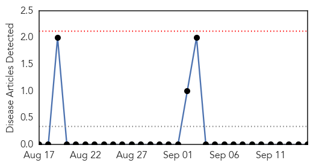
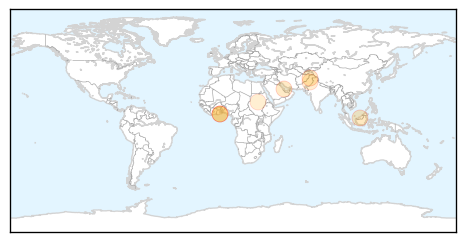

Yellow Fever
30-Day Web Trend
0 alerts, 0 warnings

30-Day Twitter Trend
0 alerts, 0 warnings

Article Locations

Article Confidences

Top Articles:
-
No articles found for Sep 15, 2014
Top Tweets:
-
No tweets found for Sep 15, 2014
Cholera
30-Day Web Trend
3 alerts, 0 warnings
30-Day Twitter Trend
0 alerts, 0 warnings
Article Locations
Article Confidences

Top Articles:
- 0.843
- Public latrines,not extensions of homes
- 0.833
- Actionaid Donates To Hospitals To Fight Cholera
- 0.733
- Disease threatens as Kashmir flood waters turn fetid
- 0.707
- Disease threatens as Kashmir flood waters turn fetid
- 0.681
- Disease threatens as Kashmir flood waters turn fetid - India
- 0.676
- Shortage of life-saving drugs hits Kashmir
- 0.556
- Disease threatens as Kashmir flood waters turn fetid
- 0.525
- Quick facts: What you need to know about the South Sudan crisis - South Sudan
Top Tweets:
-
No tweets found for Sep 15, 2014